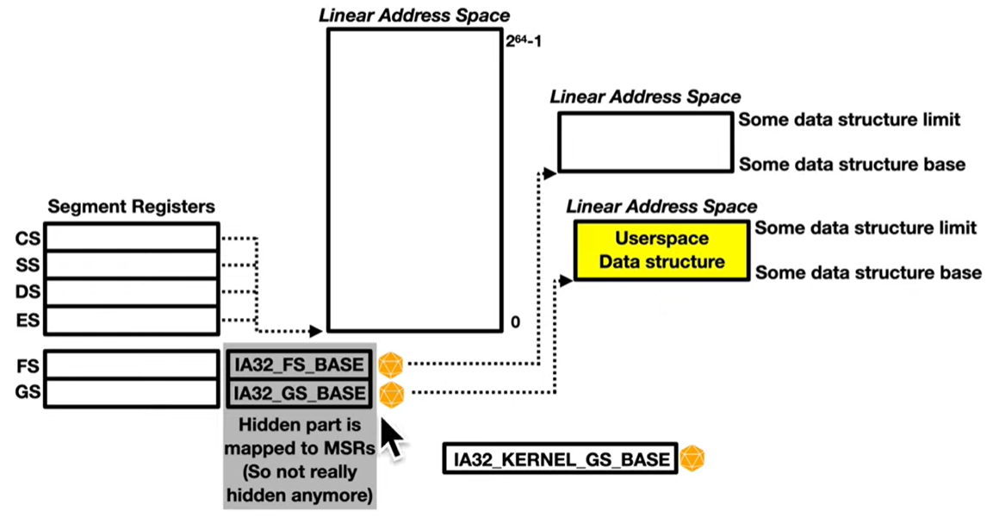

This MSR stores the 64 bit version of the base address of the segment (since the base in the segment descriptor is 32-bit).
0xC0000100
***Model-Specific Registers (MSRs) can only be set and accessed by
privileged code running in Ring 0
